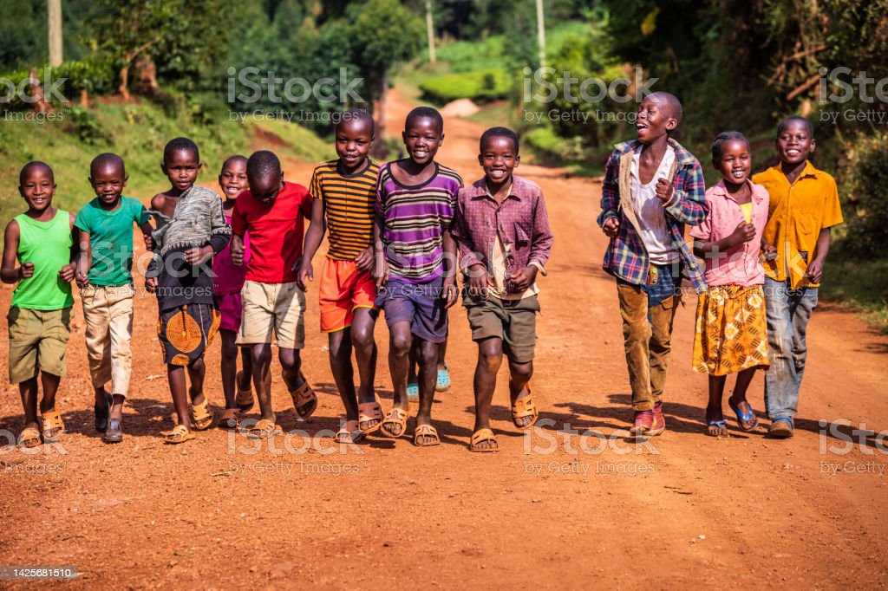

Lack of food,clothes i have come across many orphans sleeping in streets
they don't have food clothing is also a problem you find them wearing
toned clothes borrowinng food thi is so sad. So i have come up with a
solution of building a place for orphans whereby they will no longer
have this problems they will live a happy and comfortable life like
other children. With the help of people we can also change the life of
this children we can also take them to school so that they can acquire
knowledge like other children and also to make them feel loved.
Life as such is challenging and the humans have made it
more complicated because life has fallen into class and
categories where the rich are getting richer and the poor are dying for food.
it is heart-wrenching to see this situation because people are suffering
from hunger, lack of education and also some are homeless. Seeing them in this situation is really hurting.
